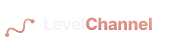

Static
Финальная статика

Используется на header, footer, всех cabinet/admin surfaces, всех transactional страницах (/pay, /checkout, /t/[slug]/pay). Этим заменяется текущий "L" wordmark.
Animated · Hero entrance
С анимацией
 Replay
Replay
Используется на первом экране /saas hero и /, при первой загрузке + после prefers-reduced-motion check. Дальше — статика.
Тайминг (auto-plays at load):
- 0.0s → 0.3s: ОБЕ точки pop-in одновременно (левая + правая с glow)
- 0.3s → 1.7s: ghost-trail draws between dots
- 0.4s → 1.6s: основная линия draws L→R, соединяет точки
- 1.7s → 2.3s: wordmark fades in (после полной сборки знака)
- 2.0s+: бесконечный gentle pulse на обеих точках (3.6s cycle)